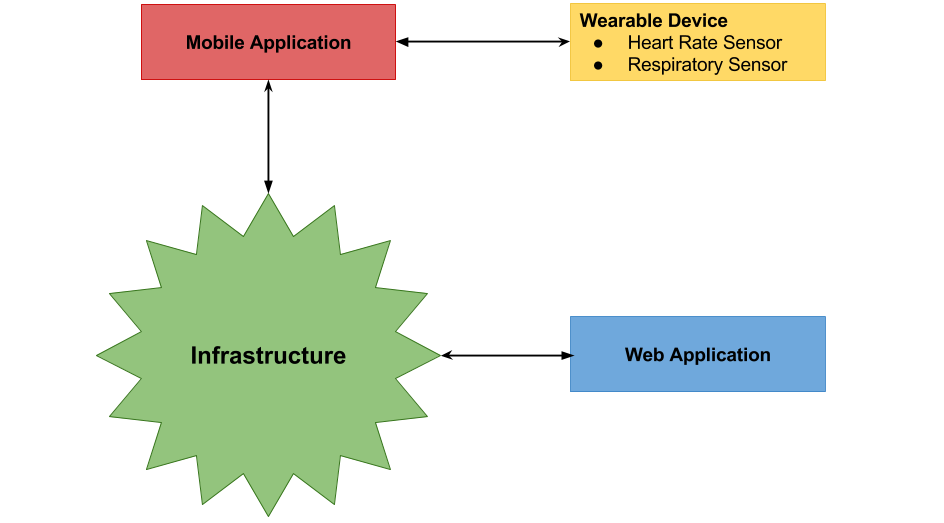
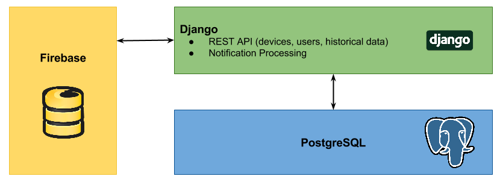
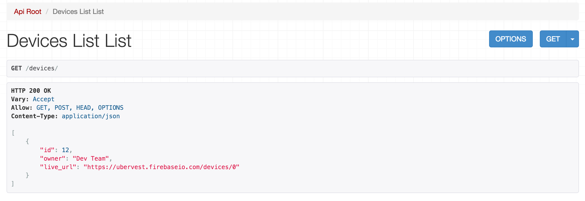
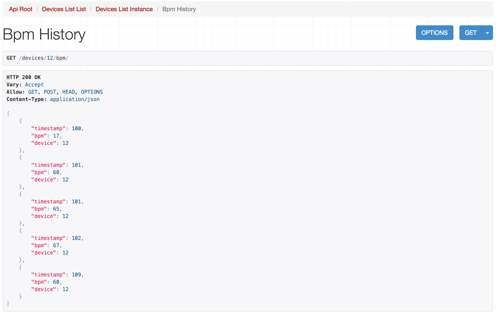
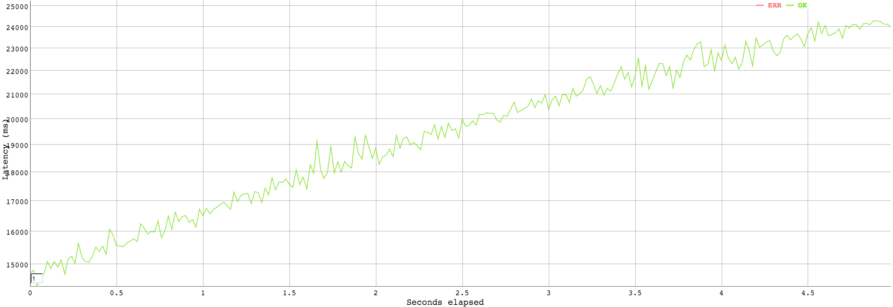
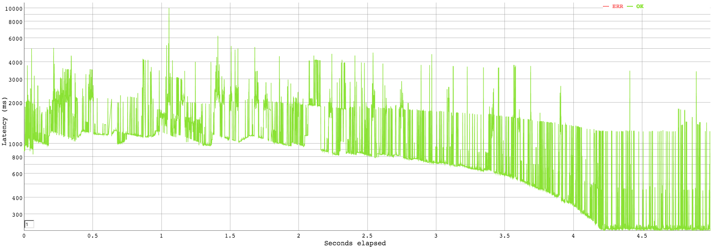
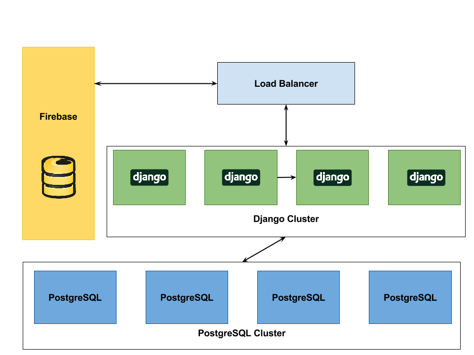

The purpose of the UberVest project is to design a wearable device - a vest - providing health monitoring functionality to the wearer. The primary aim of the vest is hearth rate monitoring and respiratory monitoring. Additionally, the project aims to deliver storage of sensory readings as well as analysis of the data in order to provide relevant and easy to use information for the wearer. Furthermore, sensory readings are communicated in real time with a monitoring application to allow real time feedback as well as monitoring.
In order to achieve the goal, the project is composed of various pieces of technology: wearable hardware, mobile application, data storage and data exposure service and a website with live monitoring.
In this report, I will focus on the design and implementation of the project architecture as well as the data storage and data exposure services which I have been involved in.
Firstly, on a high level, the requirements for the project consisted of finding a suitable infrastructure design to be able to send, process, store and expose sensory readings from the hardware component. The requirements for the project can be broken down into two categories: functional requirements and non-functional requirements.
Secondly, further details of the requirements were discovered in the process of development and implementation and will be discussed in their respective relevant sections.
Taking the above requirements into consideration, a simple explanation of the required design would be to store, analyze and retrieve information in real time. Firstly, given the nature of the system, our primary focus was on supporting real time capabilities in our system. Secondly, our focus was on the ability to provision storage and computing capacity to analyze the data.
The design process was done in steps with review of each step against both the functional and non-functional requirements. I will outline the design process below.
Firstly, it is essential to understand what kind of devices will need to be able to connect and access the infrastructure. The figure below outlines the different devices required to interact with the infrastructure. There are two devices required to interact with the infrastructure, both with different application programming interface.

Firstly, the mobile application requires to communicate with the hardware device in order to relay sensory readings to the infrastructure. The communication protocol between the smart phone and the wearable is over Bluetooth. The underlying application implementation is in Java.
Secondly, the web application uses HTML, CSS and Javascript and communicates through the HTTP protocol.
Therefore, a sensible communication protocol between the mobile application and the web application is HTTP, providing a standardized implementation and widespread adoption rate in the industry. Consequently, the infrastructure implementation is required to implement its interface to support HTTP.
The nature of the sensory readings from the wearable is the driving factor for the required type of storage used. For a given type of sensor (hearth rate, respiratory), we are mainly interested in the time series produced, therefore, we are primarily interested in a pair of data
Being an essential functional requirement of this project, the ability to effectively utilize real time updates is essential. Real time updates can be effectively implemented in the browser using web sockets while real time updated on the backend systems can be implemented using push notifications with new data inserted. Therefore, an ideal real time system used would be one supporting both websockets and some sort of a notification stream. We have decided to use FireBase [1] as the underlying storage layer. Firebase supports storage of non-relational data either as a key-value pairs in a given 'table' or as a list of values. Furthermore, FireBase provides a JavaScript implementation of a websocket client capable of listening to data changes in the storage layer itself as well as a notification stream. Threfore, FireBase satisfied both our needs for storage and real time communication capability. Furthermore, FireBase provided a free usage plan which suited our non-functional requirements of keeping the services free.
We have also evaluated other options for storage with real time communciation built into it. The table below outlines the aspects we considering during evaluation.
| Database | Pricing | Deployment Model | Ease of realtime updates | Perceived Ease of Use |
|---|---|---|---|---|
| FireBase [1] | Free | Hosted | Built-in | Easy |
| Redis [2] | Free | User managed | Additional library required | Difficult due to deployment management |
| RethinkDB [3] | Free | User managed | Built-in | Difficult due to deployment management |
Given that Firebase provided a hosted solution with built in support for realtime updates, it was decided to be the best choice for the project development model where we wanted to spend less time on infrastructure setup and more on development. Furthermore, FireBase API allows us to send data directly into FireBase from the mobile application without requiring to build an intermediate layer, removing complexity of the system.
Having decided on the underlying storage model for the sensory data, we had a clearer picture of our requirements for the API, the main processing unit of the application. The API is responsible for retrieval of raw data from the FireBase storage layer and transforming the data - applying processing and analytics - in order to be able present the data in a sensible form to the users on the website.
Functionally, we require the API to be easy to use and sufficiently performant so that it would be able to keep up with the potential load from the users. Additionally, the API also needed to be responsible for managing different devices registered with the service as well as management of users and storage of historical data.
As a direct requirement of the API, we introduce another storage layer, a relational PosgreSQL database in order to help us keep track of users and devices as well as processed data (historical) data. The decision for PosgreSQL came from the analysis that our user and device data had inherent relationships and therefore the usage of a relational database would help us better model the problem. PosgreSQL specifically was chosen for its long standing place in the industry providing a wealth of information online in case of problems.
For the API itself, we picked Python and the Django Framework for its simplicity of ORM integration with PosgreSQL. Additionally, Python is a language the whole team is familiar with as well as it allows us to iterate on a solution faster than a system written in Java or other compiled language would.
Given the outline of the components above, the infrastructure looks as follows:

There are direct interactions between Django and Firebase in order to process the data which will be outlined in more detail further on. Django then further interacts with PosgreSQL in order to store processed data as well as to serve information about users and devices. Keeping the data stores separate helps maintain separation of concerns and decouples the individual systems from each other.
As part of our requirements to be able to access the data from anywhere on the internet, it is essential to be able to able to deploy the system effectively into the public domain. Evaluating free server hosting options available to, we have decided to go with hosting provided by OpenShift. We used the following table to evaluate the features of each system its suitability for our purposes.
| Provider | Number of Applications | Host inactive for portion of day | Applications available (Python, PosgreSQL) |
|---|---|---|---|
| OpenShift [4] | 3 | No | Both |
| Heroku [5] | 1 | Sleeps 6 hours in 24 hours | Both |
| Amazon Free Tier [6] | Any number of apps | 750 hours uptime per month | Both |
Out of the options available, we feel that OpenShift provides the best features as well as constant uptime which is important for our application.
The application is configured to run on OpenShift. The platform allows us to run up to three applications. Our setup includes running the Django application, a PosgreSQL application and Jenkins [7] to handle continous deployment from our version control system (git).
When a new commit is made to the repository, Jenkins will be notified through a post commit hook and execute a deployment process. This deployment process involved a few steps:
This workflow using a continous integration agent - Jenkins - greatly simplifies the development cycle.
The API is implemented according to REST [8] design prenciples. As outlined in a paper on REST design [9], REST improves client's ability to understand the data being requested and improves discoverability of resources in the system. In order to develop our REST API quickly, a Django REST Framework [10] is used as a module for Django. Furthermore, a user friendly documentation and exploration of the API is exposed on the API server allowing a user of the API to discover various endpoints of the API. An example of such browsable API is shown below. The browsable API can be accessed through here.
 
The API application itself is broken down into packages. The top level package of interest is the devices package which contains logic for storage and retrieval of devices stored on the system. It can be retrieved through /devices or /devices/
Furthermore, the API also runs a second process responsible for listening to live ecg readings, processing them and analyzing the current value of beats per minute (Filip's work).
Finally, the processed data is being stored in the PosgreSQL database for future retrieval and analysis.
In order to evaluate the performance of the API server, we can emulate a large number of users accessing the data in the API simultaneously. Using a general purpose load tester vegeta [11], we can execute the following echo "GET http://api-ubervest.rhcloud.com/devices/" | vegeta attack -duration=5s | tee results.bin | vegeta report -reporter=plot > plot.html to obtain a graph of the latency over time over sustained load.

From the graph we can observe that the current architecture of the API (with the free version of OpenShift) is not capable of scaling with the number of requests. This is an expected result as the service provided by the free tier of OpenShift delivers service in terms of best effort. Additionally, the API server is running as a singlar instance only and therefore an increased load will have direct impact on all requests being currently processed and increase the latency as visible in the graph above. Despite the linear scaling of the API, we would expect it to be able to handle a sufficient load before a more scalable version would need to be implemented. This comes from the observation that the API is only being contacted over the HTTP protocol for information on processed data which would typically only occur once per browser load and therefore would not generate a sustained heavy load unless a large number of clients were accessing the site at the same time.
Using the same approach to load test the FireBase storage, we can run echo "GET https://ubervest.firebaseio.com/devices/12/bpm" | vegeta attack -duration=5s -rate=1000 | tee results.bin | vegeta report -reporter=plot > firebase.html to generate a sustained rate of 1k requests per second against Firebase. This is a much higher rate than we used in the case of the API, however, the FireBase storage in our case has much higher data volatility as well as throughput of data as it is storing raw sensory readings. The graph below outlines the performance observations obtained.

We can observe that the Firebase latency is for the majority of the test time above one second, this in itself is not a significant problem as a one second delay between seeing real time data is generally not going to be perceived by the user. Furthermore, it is the throughput which is of importance and in the case of Firebase we are able to handle 1k requests per second which given the free tier plan of FireBase is sufficient load before scaling would be required. It should also be noted that the method of load testing the Firebase over HTTP has overheads in terms of establishing a HTTP connection only to drop it once we have received a response and establish a response again. In our application, web sockets are used which avoid the overhead of having to re-establish connection for each data fetch as well as not having request header overheads. Therefore, in reality, FireBase performs sufficiently well for a free tier application in our scenario.
Firstly, by using a NoSQL data storage for sensory data storage, the ability to quickly add new features and real time graphs is greatly increased - the storage does not need to be modelled for the specific usecase and can be used quickly without the need for large modifications.
Secondly, by decoupling application related data from raw sensory readings, we can easily experiment with data and learn from patterns observed in the raw values. Given a pattern, we can then implement a processing tool for that sensory data and integrate it with the API for more persistent storage of processed data which may require further structure and relationships.
Firstly, given the performance graphs above, a first step in improving performance of the overall system would be to use a caching system on top of Django & PosgreSQL. A caching system such as memcached [12] would allow us to reduce the computational overheads from viewing already processed data. Additionally, further benchmarking of the system performance would reveal its ability to scale further. The cost to introducing a cache would be incrased complexity of the application as the cache would have to be invalidated given a change to the underlying data.
Secondly, the REST API could be run in a distributed fashion. Utilizing a load balancer sitting in front of the instances of the API would allow to scale horizontally and handle higher load. Similarly, moving away from a free FireBase plan into a paid solution would provide better performance and scalability.
Thirdly, in order to further increase data resiliency and improve accessibility, a cluster of database nodes could be utilized. A such cluster would be able to shard information across the instances and provide better guarantees about quality of service and resiliency of the application.
A sample setup with the above improvements included could look as follows:

As a team, we have developed a working prototype of the application allowing an elastic vest with sensors to be worn by a user. We have showed that the system is capable of communicating across the devices and that data is sent from the vest, through the mobile application, to the storage layer. Further, we have showed that the live data can be observed on a website in real time.
The design of the system strongly reflected the functional and non-functional requirements of the project and the decisions taken in favor given architectures have been justified in terms of features and/or perceived ease of use by the team.